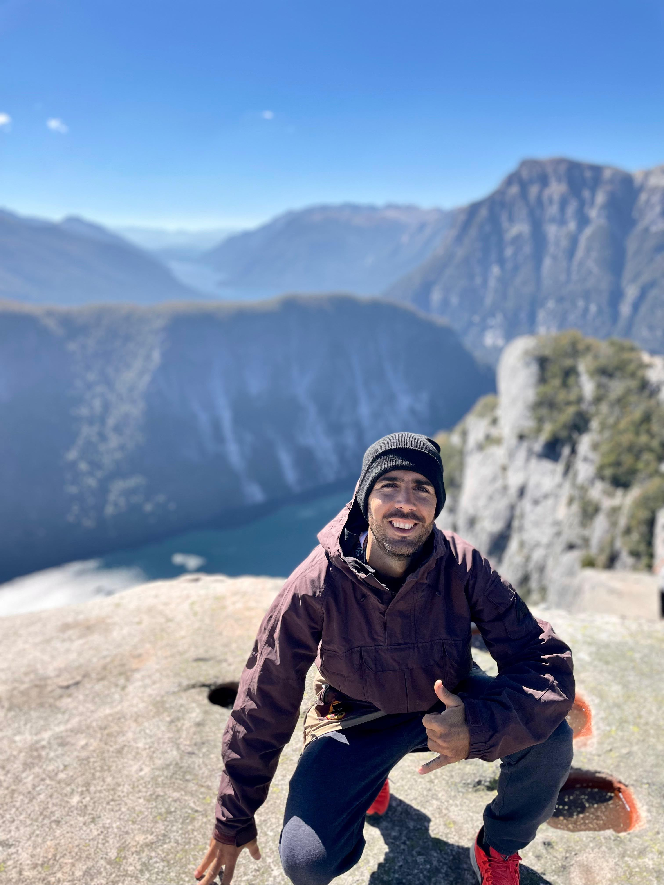

Respiración funcional
La base biomecánica. Diafragma, respiración nasal, postura, CO₂, sueño. Aprendés cómo funciona tu cuerpo antes de cualquier técnica.
LAMB — Life Awareness Metaphysic Breathwork
LAMB es un programa mensual o personalizado de 8 a 12 semanas donde aprendés a usar la respiración como herramienta para recuperar el control de tu cuerpo, regular tu sistema nervioso, despertar tu energía vital y vivir mas en Presencia.
Quiero saber si LAMB es para míEl problema no siempre es lo que hacés.
A veces es el estado interno desde el que lo hacés.
Y ese estado empieza con cómo respirás.

Hola, Soy Matias Bruland, Deportista, Gong Terapeuta, Instructor de Hatha Yoga y facilitador de Respiración Consciente, Breathwork y Pranayama.
Llevo años enseñando que la respiración no es un recurso de emergencia.
Es el entrenamiento más completo que existe.
Y LAMB es el camino que armé para que lo experimentes vos mismo.
La base biomecánica. Diafragma, respiración nasal, postura, CO₂, sueño. Aprendés cómo funciona tu cuerpo antes de cualquier técnica.
Salir del modo supervivencia. Regular emociones, bajar ansiedad, dormir mejor. Tu sistema nervioso como herramienta, no como obstáculo.
Prana, bandhas, mudras, pranayama. No como teoría — como experiencia. Cuando cambia la respiración, cambia literalmente tu energía.
La respiración se convierte en práctica. Presencia, meditación, observación, visualización. Empezás a habitarte de verdad.
Mejor relación con vos mismo, tu cuerpo, tus emociones, tu propósito. Ahí está el verdadero objetivo de LAMB.
El primer paso es una llamada de diagnóstico. Sin compromiso. Sin presión. Solo para entender dónde estás y si LAMB puede acompañarte.
Quiero agendar mi llamada